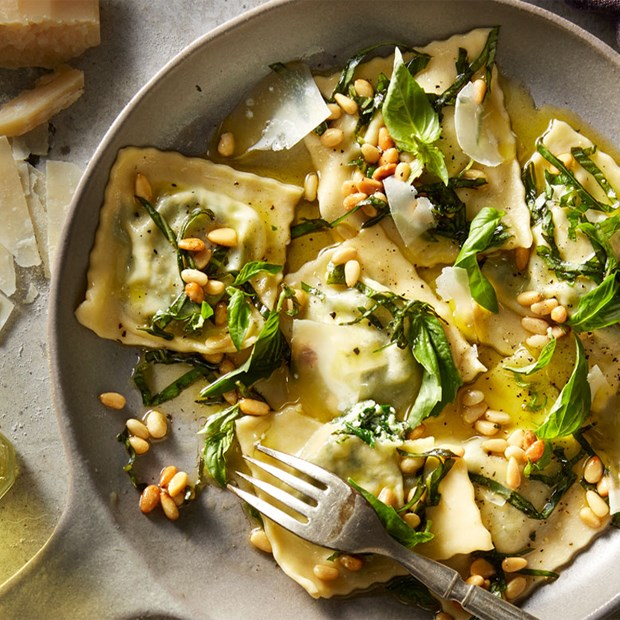

Rice and Pasta

1. Storage

Fridge temperature: Once prepared, it’s good for 3 to 4 days in your fridge.

Room temperature: Dry rice or pasta is good for 1 to 2 years in your pantry.
2. Characteristics
Provides: Both rice and pasta provide carbohydrate ,
B vitamins and energy
for the body.
3. Recommended dish: Ravioli

a. Ingredient
- 2 cups all-purpose flour, plus more for dusting
- 1 ½ teaspoons sea salt
- 4 large eggs , divided
- 2 tablespoons olive oil
- Ravioli filling of your choice

b.Instructions
- In a large bowl whisk the flour and salt. 2 cups all-purpose flour, 1 ½ teaspoons sea salt
- Make a well in the center of the flour and add 3 eggs all at once. Mix them together well using your hands. Add the olive oil and knead the dough for 5 minutes. Form into a ball and leave in the bowl, covered with plastic wrap, for 30 minutes. 4 large eggs, 2 tablespoons olive oil
- Take a small piece of the dough and either run it through a pasta machine a few times OR use a rolling pin, some flour and a considerable amount of muscle to create a thin sheet. Cut circles out of the dough using a cookie cutter or a glass.
- Whisk the remaining egg in a small bowl to make the egg wash.
- Place 1 teaspoon of the filling in the center of half the circles. Lightly brush egg wash around the edge of the circle. Place the second circle on top over the filling and use a fork to crimp the edges all around. Continue with the remaining pasta dough until all the dough or filling has been used. Ravioli filling of your choice
- To cook the pasta, bring a large pot of salted water to a boil. Add ravioli and cook for 2-3 minutes. Once they float to the top they are done. Drain the pasta and toss with olive oil or sauce.